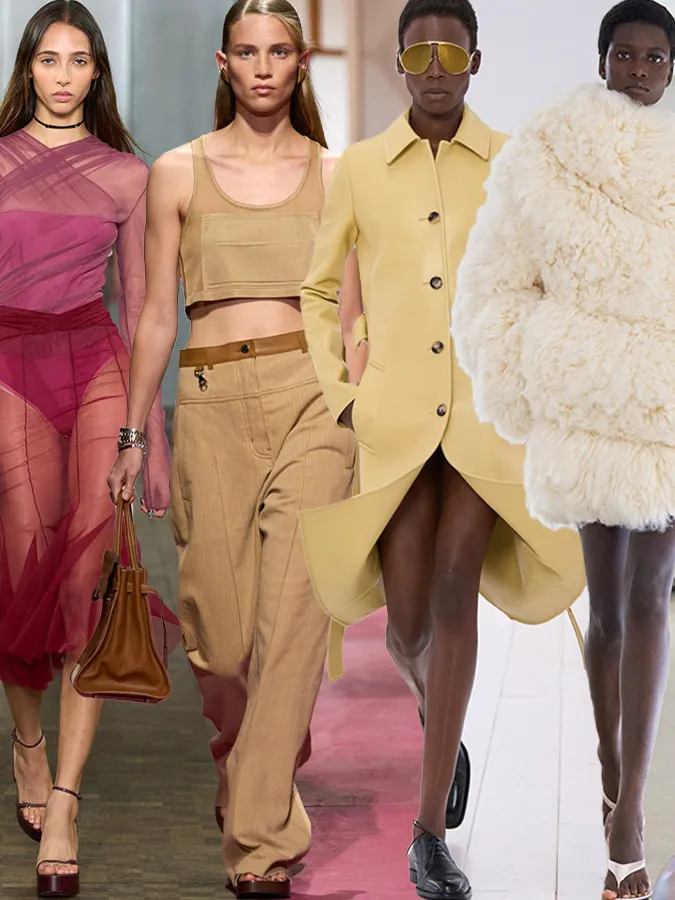

-Overly matching outfits: Like matching hat, scarf and bag.
-Denim on denim: Wearing denim on denim can look outdated.
-Inapporiate footwear: Wearing the wrong shoes can ruin an outfit.
-Ignoring body type: Wearing clothes that don't flatter your body shape can be unflattering.